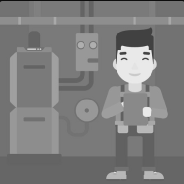
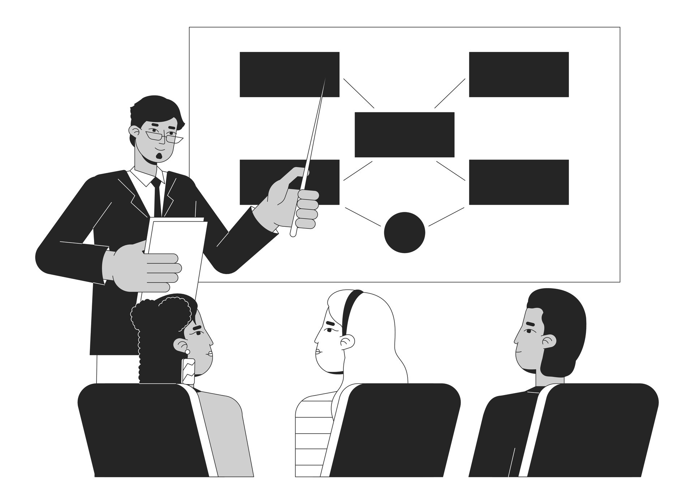

-

Hands-on research
An excellent chance to delve into the realm of research as a potential career path, guided by seasoned experts in the field.
-
Explore multiple domains
Provides a diverse array of projects from various departments, satisfying curiosity and enabling exploration across multiple domains.
-

Explore interdisciplinary fields
An opportunity to explore combined interest in multiple fields.
-

Work with professors
A golden chance to work under distinguished professors and that too during the semester.


IITK RESEARCH PORTAL
WHAT IS ITURE?
ITURE( In-Term Undergraduate Research Engagement ) serves as a centralized platform for allocating research projects to motivated undergraduate students. It enables them to pursue projects within their respective departments and facilitates the initiation of interdisciplinary projects aligned with their interests. By fostering collaboration with professors and their teams at IIT Kanpur, it encourages students to engage in hands-on research experiences throughout the semester actively. development of the IITK Research Portal to streamline the process of mapping professors with students for projects. This initiative aims to address the cumbersome and time-consuming project allocation system. necessity of this portal, highlighting its potential to help students secure projects even mid-semester, and particularly for the SURGE program, which previously required students to secure professors four months in advance.